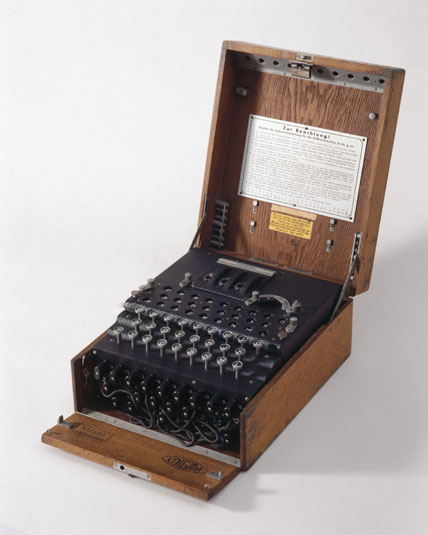
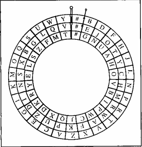

The Enigma Machine
Ever since people have been able to broadcast information they've been trying to prevent others from understanding it. A simple cypher might involve replacing ever letter with the letter that follows it.
For example:
HELLO WORLD would encode to IFMMP XPSME
Once you’ve sent the data, the person on the other
end should have some method to decode it. A good cypher is hard to decipher
without knowing exactly what to do. The example above is a weak cypher that may
trick some, but a professional decipherer would figure it out in no time.
The Enigma Machine

During World War II, the Germans used a machine known
as the Enigma Machine to encode and decode all of it messages. The Enigma
Machine used a rotating cypher, meaning that after the first letter is encoded
the cypher changes. The first time you encode an “A” it will give you one value,
but the second time it will give you a completely different value. The Enigma
code is legendary for being unbreakable and it wasn’t until the Allies actually
physically captured a machine that they were able to decipher the German
messages.
A Simple Example:
We are going to create our own Enigma Machine, but
simplified to fit our programming abilities. First you must understand how it
works. The Enigma Machine used a system of rotors to line up letters. Different
models varied in their number of rotors, but we are going to use a 3 rotor
system. In the diagram below we see the three rotors visualized. For this
assignment they will be called the inner, middle, and outer rotor.

The Rotor Class
Instance Fields:
There will be one instance field, a String that contains all 26 letters of the alphabet. For Example, “BDFHJLNPRTVXZACEGIKMOQSUWY” will be the key to one of the rotors. This will simulate the order of the letters on the rotor.
Constructor:
The constructor should simply take in a String and
assign it to the instance field. There is no default String, it should be
supplied upon construction.
Methods:
public int getCharacterIndex(String character)
This method will take in a character as a String and
return the index that that particular character appears in the instance field.
public String getCharacterAt(int index)
This method takes in an index and returns a String
containing the letter at that index
public void rotate()
This method simulates rotating the String by removing
the last character from the instance field and putting it at the front. For
example: ABCDEFG would become GABCDEF after one call, FGABCDE after a second, and
so forth. Don't forget that the purpose of this method is to change the
instance field of the Rotor.
public void setStartingLetter(String letter)
This method will
take in a single character String as a parameter and set the instance field so
that character is at the first index. You must preserve the order of the
characters; for example: If the instance field is ABCDEFG and
setStartingLetter("E") is called, the field will then be EFGABCD
public String toString()
Simply return the instance field.
Testing the Rotor class
Copy and paste the following Runner into your project.
public class RotorTest
{
public static void main()
{
System.out.println("Constructing a Rotor with the key GNUAHOVBIPWCJQXDKRYELSZFMT");
Rotor rot = new Rotor("GNUAHOVBIPWCJQXDKRYELSZFMT");
System.out.println(rot);
System.out.println("A is at index "+rot.getCharacterIndex("A"));
System.out.println("\nRotating...");
rot.rotate();
System.out.println(rot);
System.out.println("A is at index "+rot.getCharacterIndex("A"));
System.out.println("\nRotating...");
rot.rotate();
System.out.println(rot);
System.out.println("The letter at index 10 is "+rot.getCharacterAt(10));
System.out.println("\nSetting the starting letter to Q");
rot.setStartingLetter("Q");
System.out.println(rot);
}
}
Run this method and make sure that you get the following output before moving on.
Constructing a Rotor with the key GNUAHOVBIPWCJQXDKRYELSZFMT
GNUAHOVBIPWCJQXDKRYELSZFMT
A is at index 3
Rotating...
TGNUAHOVBIPWCJQXDKRYELSZFM
A is at index 4
Rotating...
MTGNUAHOVBIPWCJQXDKRYELSZF
The letter at index 10 is I
Setting the starting letter to Q
QXDKRYELSZFMTGNUAHOVBIPWCJ
This method undoes everything that encodeLetter
does in a backward order.
- Find the letter on the outer rotor
- Find the matching letter on the middle Rotor
- Find that new letter on the outer Rotor and match it to the letter on the
inner Rotor. That is the decoded letter.
-Before you return, rotate the inner Rotor
To test this method, construct a new EnigmaMachine and call the decodeLetter method three times with an “A” as the parameter. It should give you a B, a V, and an O.
public String encodeLetterGroup(String letterGroup)
In order to further complicate the encryption letters were put into groups of 5 instead of using their natural spaces. For example: MISTE RSACC OISAM AZING.
This method should take in a five letter String as a parameter and return the encoded version of it. Don't forget that you may enlist the encodeLetter method to do the encoding for you. This method just has to break the String into five parts.
Test this method by constructing a new EnigmaMachine and calling encodeLetterGroup with "SACCO" as the parameter. It should return "WDVLH"
public String decodeLetterGroup(String letterGroup)
Similar to the previous method, this method will take in a String of length 5
and return the decoded version of all five letters.
Test this method by constructing a new EnigmaMachine and calling the decodeLetterGroup with "DFMCH" as a parameter. It should return "HELLO".
public void setStartingValues(String vals)
Another way to make the system hard to decode was to change the starting spots
for each of the Rotors, meaning that encoded messages would be different
depending on the day. This method will accept a three character String
containing the starting letters for the three Rotors. The first character
is the inner rotor's starting value, the second is for the middle rotor, and the
third is for the outer rotor.
Testing the EnigmaMachine class:
Copy and paste the following runner into your project:
public class EnigmaTester
{
public static void main()
{
EnigmaMachine enigma = new EnigmaMachine();
System.out.println("Setting starting values to \"CAR\"");
enigma.setStartingValues("CAR");
String sacCode = enigma.encodeLetterGroup("ABCDE");
System.out.println("\"ABCDE\" encodes to "+ sacCode+ " which is "+(sacCode.equals("MQUWB")?"right":"wrong"));
System.out.println("Setting starting values to \"HAT\"");
enigma.setStartingValues("HAT");
sacCode = enigma.decodeLetterGroup("PTXAV");
System.out.println("\"PTXAV\" decodes to "+ sacCode+ " which is "+(sacCode.equals("ABCDE")?"right":"wrong"));
}
}
Run it, and the output should be exactly:
Setting starting values to "CAR"
"ABCDE" encodes to MQUWB which is right
Setting starting values to "HAT"
"PTXAV" decodes to ABCDE which is right
Use the Enigma Emulator to test your encoding/decoding
It uses the default starting values for all the rotors (GEB)
Enter a message below and click a button to encode or decode it.